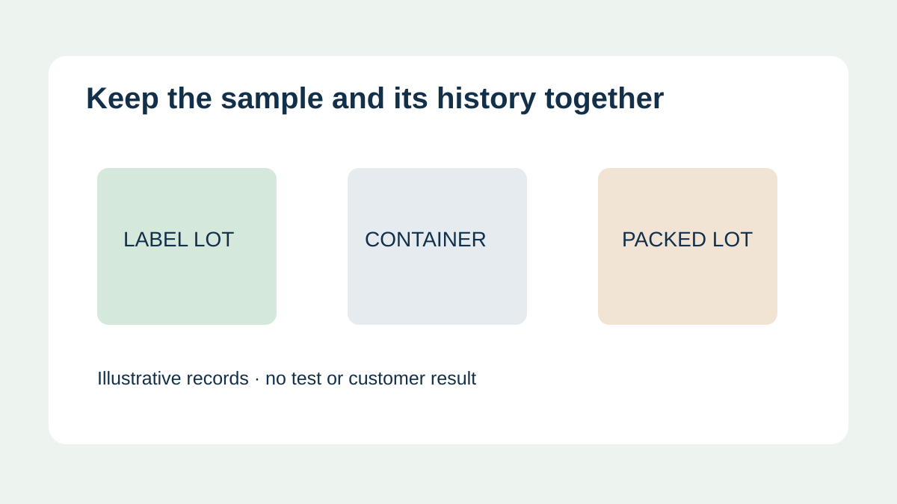
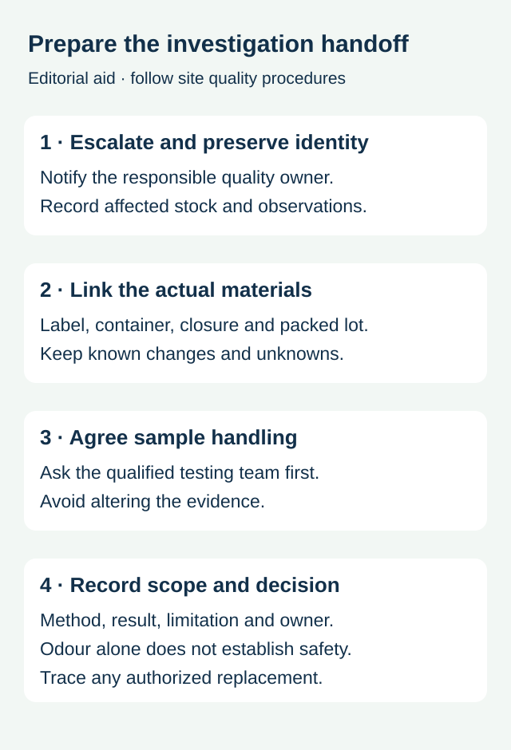

A food brand reports an unexpected smell after opening a carton of newly labelled containers. The label is one possible part of the investigation, alongside the container, closure, packing material, product and storage history. Replacing the label immediately may consume useful evidence without identifying the source.
Escalate the observation through the site's quality process, preserve material identities and agree sample handling with the qualified investigation team. A smell on a loose label does not establish food contamination, and an absence of noticeable smell does not establish food-contact safety.

Describe the observation before assigning the cause
Record who noticed the issue, where, when and on what identified material. Distinguish an observation on an unopened carton, loose labels, empty labelled packaging or a packed food item. These are different sample situations. Keep the wording factual and avoid identifying a chemical or blaming the adhesive from the smell alone. Do not ask staff to taste suspect food or deliberately inhale an unknown substance.
The food business's quality owner should assess the affected product and any hold, escalation or further action under its procedures. The label converter can identify the supplied materials and production references; it cannot decide the safety or release of a customer's food from a description or photograph.
Connect the samples without changing their history


| Record | What to preserve | Question left open |
|---|---|---|
| Observed material | Sample identity, observation time and whether opened | What part of the package or process produced the observation? |
| Label | Roll or sheet lot, artwork, face, adhesive, ink and finish references | Which supplied construction is represented? |
| Package | Container, closure, secondary pack and supplier lots | Were other material changes made? |
| Process | Printing, application, filling and storage history where known | Which intervals or conditions were not recorded? |
| Handoff | Custodian, sample handling instructions and test request | What can the planned examination establish? |
Ask the testing party how to select, package, store and send samples before opening, airing, cleaning or transferring them. A container or wrapping used for shipment can affect an odour investigation. The appropriate method depends on the materials and question, so do not improvise a universal sealed-bag experiment. Keep untouched retains where the responsible team requests them and record what has already been done to each sample.
Use comparisons that preserve the relevant differences
For a hypothetical brand, a changed closure and a new label finish enter production together. An observation on the finished pack cannot isolate either change. Give the investigators the actual material references and available retained or comparison samples with their histories. They can decide which comparisons are informative and which cannot support a conclusion.
A comparison sample from another storage environment or product may still provide context, but label the difference. Do not describe it as a matched control unless the testing team accepts that description. Keep the original observation and any later findings separate so a replacement material does not erase the investigation record.
Keep sensory observations and compliance evidence distinct
Food-contact assessment considers the actual materials, food, contact route and use conditions. For an EU example, the European Commission's food-contact materials overview includes unacceptable changes to taste and odour among the framework concerns, alongside health and composition. That general principle does not identify the source of a particular smell or decide whether a specific label meets the applicable requirements.
The responsible reviewer should determine which documentation, analysis or sensory assessment is appropriate for the product and market. A general ink statement, a material safety sheet and a finished-package evaluation serve different purposes. The food-packaging ink documentation guide helps match component documents to the proposed construction.
Close the technical and commercial questions separately
Record the examination method, sample, findings, limits and responsible decision. A replacement shipment may solve an immediate supply problem while the cause remains unresolved. It does not by itself prove that the original labels caused the observation or authorize the use of affected food. Preserve the relationship between the original lots, any replacement and the site's disposition decision.
Use the complaint evidence guide for the broader sample handoff and retained-sample planning for future evidence availability. To discuss the supplied labels, prepare a specification inquiry with the construction, package and lot references, the recorded observation and the investigation owner's request. The contact page opens an email draft and lists email or WhatsApp for attachments. Actual testing and supply scope require confirmation.